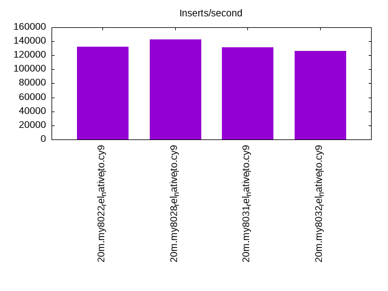
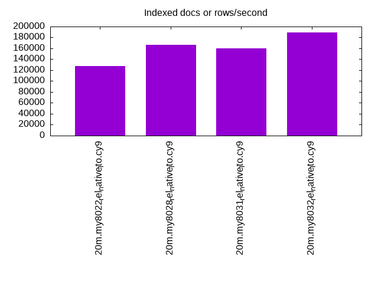
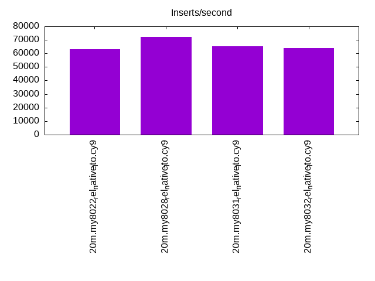
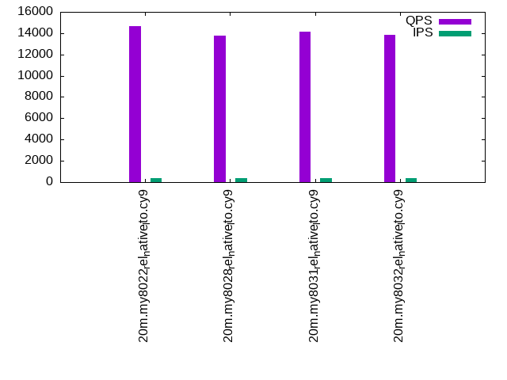
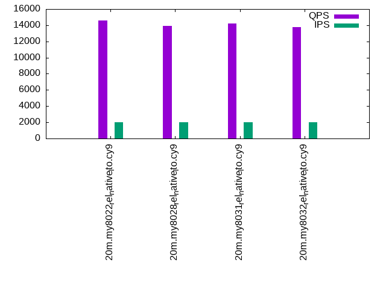
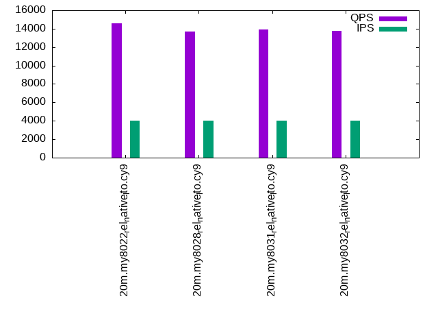

This is a report for the insert benchmark with 20M docs and 4 client(s). It is generated by scripts (bash, awk, sed) and Tufte might not be impressed. An overview of the insert benchmark is here and a short update is here. Below, by DBMS, I mean DBMS+version.config. An example is my8020.c10b40 where my means MySQL, 8020 is version 8.0.20 and c10b40 is the name for the configuration file.
The test server has 8 AMD cores, 16G RAM and an NVMe SSD. It is described here as the Beelink. The benchmark was run with 4 clients and there were 1 or 2 connections per client (1 for queries, 1 for inserts). The benchmark loads 20M rows without secondary indexes, creates secondary indexes, loads another 20M rows then does 3 read+write tests for one hour each that do queries as fast as possible with 100, 500 and then 1000 writes/second/client concurrent with the queries. There is 1 table. The database is cached by the storage engine and the only IO is for writes. Clients and the DBMS share one server. The per-database configs are in the per-database subdirectories here.
The tested DBMS are:
The numbers are inserts/s for l.i0 and l.i1, indexed docs (or rows) /s for l.x and queries/s for q*.2. The values are the average rate over the entire test for inserts (IPS) and queries (QPS). The range of values for IPS and QPS is split into 3 parts: bottom 25%, middle 50%, top 25%. Values in the bottom 25% have a red background, values in the top 25% have a green background and values in the middle have no color. A gray background is used for values that can be ignored because the DBMS did not sustain the target insert rate. Red backgrounds are not used when the minimum value is within 80% of the max value.
| dbms | l.i0 | l.x | l.i1 | q100.1 | q500.1 | q1000.1 |
|---|---|---|---|---|---|---|
| 20m.my8022_rel_native_lto.cy9 | 132450 | 128025 | 63291 | 14645 | 14606 | 14554 |
| 20m.my8028_rel_native_lto.cy9 | 142857 | 166116 | 72202 | 13780 | 13906 | 13676 |
| 20m.my8031_rel_native_lto.cy9 | 131579 | 159524 | 65359 | 14173 | 14182 | 13910 |
| 20m.my8032_rel_native_lto.cy9 | 126582 | 189623 | 64102 | 13814 | 13732 | 13765 |
This table has relative throughput, throughput for the DBMS relative to the DBMS in the first line, using the absolute throughput from the previous table.
| dbms | l.i0 | l.x | l.i1 | q100.1 | q500.1 | q1000.1 |
|---|---|---|---|---|---|---|
| 20m.my8022_rel_native_lto.cy9 | 1.00 | 1.00 | 1.00 | 1.00 | 1.00 | 1.00 |
| 20m.my8028_rel_native_lto.cy9 | 1.08 | 1.30 | 1.14 | 0.94 | 0.95 | 0.94 |
| 20m.my8031_rel_native_lto.cy9 | 0.99 | 1.25 | 1.03 | 0.97 | 0.97 | 0.96 |
| 20m.my8032_rel_native_lto.cy9 | 0.96 | 1.48 | 1.01 | 0.94 | 0.94 | 0.95 |
This lists the average rate of inserts/s for the tests that do inserts concurrent with queries. For such tests the query rate is listed in the table above. The read+write tests are setup so that the insert rate should match the target rate every second. Cells that are not at least 95% of the target have a red background to indicate a failure to satisfy the target.
| dbms | q100.1 | q500.1 | q1000.1 |
|---|---|---|---|
| my8022_rel_native_lto.cy9 | 399 | 1994 | 3989 |
| my8028_rel_native_lto.cy9 | 399 | 1994 | 3989 |
| my8031_rel_native_lto.cy9 | 399 | 1993 | 3989 |
| my8032_rel_native_lto.cy9 | 399 | 1994 | 3989 |
| target | 400 | 2000 | 4000 |
l.i0: load without secondary indexes. Graphs for performance per 1-second interval are here.
Average throughput:
Insert response time histogram: each cell has the percentage of responses that take <= the time in the header and max is the max response time in seconds. For the max column values in the top 25% of the range have a red background and in the bottom 25% of the range have a green background. The red background is not used when the min value is within 80% of the max value.
| dbms | 256us | 1ms | 4ms | 16ms | 64ms | 256ms | 1s | 4s | 16s | gt | max |
|---|---|---|---|---|---|---|---|---|---|---|---|
| my8022_rel_native_lto.cy9 | 98.284 | 0.485 | 1.217 | 0.014 | 0.116 | ||||||
| my8028_rel_native_lto.cy9 | 98.202 | 0.857 | 0.923 | 0.017 | 0.116 | ||||||
| my8031_rel_native_lto.cy9 | 98.024 | 1.011 | 0.951 | 0.013 | 0.119 | ||||||
| my8032_rel_native_lto.cy9 | 97.864 | 1.192 | 0.928 | 0.015 | 0.121 |
Performance metrics for the DBMS listed above. Some are normalized by throughput, others are not. Legend for results is here.
ips qps rps rmbps wps wmbps rpq rkbpq wpi wkbpi csps cpups cspq cpupq dbgb1 dbgb2 rss maxop p50 p99 tag 132450 0 0 0.0 466.1 53.0 0.000 0.000 0.004 0.410 13687 57.2 0.103 35 2.4 11.0 3.3 0.116 35273 10588 20m.my8022_rel_native_lto.cy9 142857 0 0 0.0 474.2 56.1 0.000 0.000 0.003 0.402 14852 59.5 0.104 33 2.4 10.9 3.2 0.116 38458 32664 20m.my8028_rel_native_lto.cy9 131579 0 0 0.0 447.9 52.9 0.000 0.000 0.003 0.411 13865 58.3 0.105 35 2.4 10.9 3.3 0.119 35376 28369 20m.my8031_rel_native_lto.cy9 126582 0 0 0.0 443.4 51.4 0.000 0.000 0.004 0.416 13463 58.4 0.106 37 2.4 11.0 3.3 0.121 34063 28879 20m.my8032_rel_native_lto.cy9
l.x: create secondary indexes.
Average throughput:
Performance metrics for the DBMS listed above. Some are normalized by throughput, others are not. Legend for results is here.
ips qps rps rmbps wps wmbps rpq rkbpq wpi wkbpi csps cpups cspq cpupq dbgb1 dbgb2 rss maxop p50 p99 tag 128025 0 0 0.0 1382.0 106.0 0.000 0.000 0.011 0.848 7380 12.4 0.058 8 4.0 12.6 3.8 0.024 NA NA 20m.my8022_rel_native_lto.cy9 166116 0 863 57.8 3439.5 176.2 0.005 0.356 0.021 1.086 11790 42.5 0.071 20 4.0 12.6 4.1 0.010 NA NA 20m.my8028_rel_native_lto.cy9 159524 0 830 55.5 3115.0 166.3 0.005 0.356 0.020 1.068 11364 42.6 0.071 21 4.0 12.6 4.5 0.017 NA NA 20m.my8031_rel_native_lto.cy9 189623 0 987 66.0 3543.6 194.0 0.005 0.357 0.019 1.048 12982 41.0 0.068 17 4.0 12.6 4.6 0.010 NA NA 20m.my8032_rel_native_lto.cy9
l.i1: continue load after secondary indexes created. Graphs for performance per 1-second interval are here.
Average throughput:
Insert response time histogram: each cell has the percentage of responses that take <= the time in the header and max is the max response time in seconds. For the max column values in the top 25% of the range have a red background and in the bottom 25% of the range have a green background. The red background is not used when the min value is within 80% of the max value.
| dbms | 256us | 1ms | 4ms | 16ms | 64ms | 256ms | 1s | 4s | 16s | gt | max |
|---|---|---|---|---|---|---|---|---|---|---|---|
| my8022_rel_native_lto.cy9 | 97.247 | 1.276 | 1.315 | 0.162 | 0.247 | ||||||
| my8028_rel_native_lto.cy9 | 97.232 | 1.896 | 0.859 | 0.014 | 0.115 | ||||||
| my8031_rel_native_lto.cy9 | 96.827 | 2.266 | 0.885 | 0.022 | 0.104 | ||||||
| my8032_rel_native_lto.cy9 | 96.707 | 2.365 | 0.895 | 0.033 | 0.104 |
Performance metrics for the DBMS listed above. Some are normalized by throughput, others are not. Legend for results is here.
ips qps rps rmbps wps wmbps rpq rkbpq wpi wkbpi csps cpups cspq cpupq dbgb1 dbgb2 rss maxop p50 p99 tag 63291 0 293 4.6 1519.7 79.6 0.005 0.074 0.024 1.287 16499 51.4 0.261 65 10.1 18.7 10.0 0.247 17480 300 20m.my8022_rel_native_lto.cy9 72202 0 335 5.2 1638.2 87.8 0.005 0.074 0.023 1.246 19879 56.2 0.275 62 10.1 18.7 9.9 0.115 18879 899 20m.my8028_rel_native_lto.cy9 65359 0 302 4.7 1865.3 95.2 0.005 0.074 0.029 1.492 19235 55.4 0.294 68 10.1 18.7 10.0 0.104 17130 849 20m.my8031_rel_native_lto.cy9 64102 0 297 4.6 1847.1 93.9 0.005 0.074 0.029 1.500 19121 55.6 0.298 69 10.1 18.7 10.0 0.104 16981 800 20m.my8032_rel_native_lto.cy9
q100.1: range queries with 100 insert/s per client. Graphs for performance per 1-second interval are here.
Average throughput:
Query response time histogram: each cell has the percentage of responses that take <= the time in the header and max is the max response time in seconds. For max values in the top 25% of the range have a red background and in the bottom 25% of the range have a green background. The red background is not used when the min value is within 80% of the max value.
| dbms | 256us | 1ms | 4ms | 16ms | 64ms | 256ms | 1s | 4s | 16s | gt | max |
|---|---|---|---|---|---|---|---|---|---|---|---|
| my8022_rel_native_lto.cy9 | 54.529 | 45.465 | 0.005 | nonzero | 0.001 | 0.030 | |||||
| my8028_rel_native_lto.cy9 | 46.721 | 53.273 | 0.005 | 0.001 | nonzero | 0.021 | |||||
| my8031_rel_native_lto.cy9 | 51.317 | 48.677 | 0.005 | 0.001 | nonzero | 0.022 | |||||
| my8032_rel_native_lto.cy9 | 47.113 | 52.881 | 0.005 | 0.001 | nonzero | 0.021 |
Insert response time histogram: each cell has the percentage of responses that take <= the time in the header and max is the max response time in seconds. For max values in the top 25% of the range have a red background and in the bottom 25% of the range have a green background. The red background is not used when the min value is within 80% of the max value.
| dbms | 256us | 1ms | 4ms | 16ms | 64ms | 256ms | 1s | 4s | 16s | gt | max |
|---|---|---|---|---|---|---|---|---|---|---|---|
| my8022_rel_native_lto.cy9 | 98.201 | 0.917 | 0.882 | 0.039 | |||||||
| my8028_rel_native_lto.cy9 | 98.340 | 0.986 | 0.674 | 0.034 | |||||||
| my8031_rel_native_lto.cy9 | 98.479 | 0.819 | 0.701 | 0.030 | |||||||
| my8032_rel_native_lto.cy9 | 98.347 | 1.076 | 0.576 | 0.029 |
Performance metrics for the DBMS listed above. Some are normalized by throughput, others are not. Legend for results is here.
ips qps rps rmbps wps wmbps rpq rkbpq wpi wkbpi csps cpups cspq cpupq dbgb1 dbgb2 rss maxop p50 p99 tag 399 14645 0 0.0 229.5 6.0 0.000 0.000 0.576 15.398 56253 50.3 3.841 275 10.5 19.1 10.3 0.030 3628 3212 20m.my8022_rel_native_lto.cy9 399 13780 0 0.0 240.4 6.2 0.000 0.000 0.603 15.896 53178 50.3 3.859 292 10.5 19.0 10.3 0.021 3420 3053 20m.my8028_rel_native_lto.cy9 399 14173 0 0.0 233.5 6.1 0.000 0.000 0.585 15.657 54856 50.0 3.870 282 10.5 19.1 10.3 0.022 3614 2941 20m.my8031_rel_native_lto.cy9 399 13814 0 0.0 236.8 6.2 0.000 0.000 0.594 15.882 53470 50.0 3.871 290 10.5 19.1 10.3 0.021 3468 2814 20m.my8032_rel_native_lto.cy9
q500.1: range queries with 500 insert/s per client. Graphs for performance per 1-second interval are here.
Average throughput:
Query response time histogram: each cell has the percentage of responses that take <= the time in the header and max is the max response time in seconds. For max values in the top 25% of the range have a red background and in the bottom 25% of the range have a green background. The red background is not used when the min value is within 80% of the max value.
| dbms | 256us | 1ms | 4ms | 16ms | 64ms | 256ms | 1s | 4s | 16s | gt | max |
|---|---|---|---|---|---|---|---|---|---|---|---|
| my8022_rel_native_lto.cy9 | 54.701 | 45.279 | 0.016 | 0.002 | 0.001 | 0.032 | |||||
| my8028_rel_native_lto.cy9 | 48.002 | 51.978 | 0.018 | 0.002 | 0.001 | 0.026 | |||||
| my8031_rel_native_lto.cy9 | 51.351 | 48.630 | 0.017 | 0.002 | nonzero | 0.022 | |||||
| my8032_rel_native_lto.cy9 | 45.772 | 54.209 | 0.016 | 0.003 | 0.001 | 0.023 |
Insert response time histogram: each cell has the percentage of responses that take <= the time in the header and max is the max response time in seconds. For max values in the top 25% of the range have a red background and in the bottom 25% of the range have a green background. The red background is not used when the min value is within 80% of the max value.
| dbms | 256us | 1ms | 4ms | 16ms | 64ms | 256ms | 1s | 4s | 16s | gt | max |
|---|---|---|---|---|---|---|---|---|---|---|---|
| my8022_rel_native_lto.cy9 | 95.453 | 3.592 | 0.922 | 0.033 | 0.106 | ||||||
| my8028_rel_native_lto.cy9 | 96.568 | 2.772 | 0.633 | 0.026 | 0.113 | ||||||
| my8031_rel_native_lto.cy9 | 97.493 | 2.056 | 0.438 | 0.014 | 0.103 | ||||||
| my8032_rel_native_lto.cy9 | 95.810 | 3.501 | 0.676 | 0.013 | 0.103 |
Performance metrics for the DBMS listed above. Some are normalized by throughput, others are not. Legend for results is here.
ips qps rps rmbps wps wmbps rpq rkbpq wpi wkbpi csps cpups cspq cpupq dbgb1 dbgb2 rss maxop p50 p99 tag 1994 14606 0 0.0 182.4 5.6 0.000 0.000 0.091 2.878 55533 51.2 3.802 280 11.4 20.0 11.1 0.032 3628 3214 20m.my8022_rel_native_lto.cy9 1994 13906 0 0.0 214.3 6.4 0.000 0.000 0.107 3.275 53140 51.3 3.821 295 11.4 19.9 11.0 0.026 3452 3053 20m.my8028_rel_native_lto.cy9 1993 14182 0 0.0 221.3 6.7 0.000 0.000 0.111 3.423 54456 51.0 3.840 288 11.3 19.9 10.9 0.022 3582 2942 20m.my8031_rel_native_lto.cy9 1994 13732 0 0.0 224.1 6.8 0.000 0.000 0.112 3.477 52655 51.1 3.835 298 11.4 20.0 10.9 0.023 3404 2781 20m.my8032_rel_native_lto.cy9
q1000.1: range queries with 1000 insert/s per client. Graphs for performance per 1-second interval are here.
Average throughput:
Query response time histogram: each cell has the percentage of responses that take <= the time in the header and max is the max response time in seconds. For max values in the top 25% of the range have a red background and in the bottom 25% of the range have a green background. The red background is not used when the min value is within 80% of the max value.
| dbms | 256us | 1ms | 4ms | 16ms | 64ms | 256ms | 1s | 4s | 16s | gt | max |
|---|---|---|---|---|---|---|---|---|---|---|---|
| my8022_rel_native_lto.cy9 | 55.126 | 44.834 | 0.034 | 0.005 | 0.001 | 0.033 | |||||
| my8028_rel_native_lto.cy9 | 45.540 | 54.413 | 0.041 | 0.006 | 0.001 | 0.022 | |||||
| my8031_rel_native_lto.cy9 | 47.252 | 52.713 | 0.030 | 0.005 | 0.001 | 0.025 | |||||
| my8032_rel_native_lto.cy9 | 45.556 | 54.405 | 0.034 | 0.005 | 0.001 | 0.022 |
Insert response time histogram: each cell has the percentage of responses that take <= the time in the header and max is the max response time in seconds. For max values in the top 25% of the range have a red background and in the bottom 25% of the range have a green background. The red background is not used when the min value is within 80% of the max value.
| dbms | 256us | 1ms | 4ms | 16ms | 64ms | 256ms | 1s | 4s | 16s | gt | max |
|---|---|---|---|---|---|---|---|---|---|---|---|
| my8022_rel_native_lto.cy9 | 95.903 | 3.419 | 0.663 | 0.015 | 0.110 | ||||||
| my8028_rel_native_lto.cy9 | 96.617 | 2.954 | 0.399 | 0.030 | 0.109 | ||||||
| my8031_rel_native_lto.cy9 | 93.794 | 5.615 | 0.572 | 0.019 | 0.107 | ||||||
| my8032_rel_native_lto.cy9 | 96.369 | 3.216 | 0.406 | 0.009 | 0.105 |
Performance metrics for the DBMS listed above. Some are normalized by throughput, others are not. Legend for results is here.
ips qps rps rmbps wps wmbps rpq rkbpq wpi wkbpi csps cpups cspq cpupq dbgb1 dbgb2 rss maxop p50 p99 tag 3989 14554 1 0.0 325.0 10.0 0.000 0.002 0.081 2.568 54743 52.5 3.761 289 12.8 21.4 11.1 0.033 3644 3196 20m.my8022_rel_native_lto.cy9 3989 13676 2 0.0 311.3 9.6 0.000 0.002 0.078 2.469 51758 52.4 3.785 307 12.7 21.3 11.1 0.022 3372 2989 20m.my8028_rel_native_lto.cy9 3989 13910 2 0.0 395.2 12.0 0.000 0.002 0.099 3.080 52858 52.6 3.800 303 12.8 21.3 11.1 0.025 3454 2893 20m.my8031_rel_native_lto.cy9 3989 13765 1 0.0 391.4 11.8 0.000 0.002 0.098 3.036 52304 52.6 3.800 306 12.7 21.3 11.1 0.022 3516 2909 20m.my8032_rel_native_lto.cy9
l.i0: load without secondary indexes
Performance metrics for all DBMS, not just the ones listed above. Some are normalized by throughput, others are not. Legend for results is here.
ips qps rps rmbps wps wmbps rpq rkbpq wpi wkbpi csps cpups cspq cpupq dbgb1 dbgb2 rss maxop p50 p99 tag 132450 0 0 0.0 466.1 53.0 0.000 0.000 0.004 0.410 13687 57.2 0.103 35 2.4 11.0 3.3 0.116 35273 10588 20m.my8022_rel_native_lto.cy9 142857 0 0 0.0 474.2 56.1 0.000 0.000 0.003 0.402 14852 59.5 0.104 33 2.4 10.9 3.2 0.116 38458 32664 20m.my8028_rel_native_lto.cy9 131579 0 0 0.0 447.9 52.9 0.000 0.000 0.003 0.411 13865 58.3 0.105 35 2.4 10.9 3.3 0.119 35376 28369 20m.my8031_rel_native_lto.cy9 126582 0 0 0.0 443.4 51.4 0.000 0.000 0.004 0.416 13463 58.4 0.106 37 2.4 11.0 3.3 0.121 34063 28879 20m.my8032_rel_native_lto.cy9
l.x: create secondary indexes
Performance metrics for all DBMS, not just the ones listed above. Some are normalized by throughput, others are not. Legend for results is here.
ips qps rps rmbps wps wmbps rpq rkbpq wpi wkbpi csps cpups cspq cpupq dbgb1 dbgb2 rss maxop p50 p99 tag 128025 0 0 0.0 1382.0 106.0 0.000 0.000 0.011 0.848 7380 12.4 0.058 8 4.0 12.6 3.8 0.024 NA NA 20m.my8022_rel_native_lto.cy9 166116 0 863 57.8 3439.5 176.2 0.005 0.356 0.021 1.086 11790 42.5 0.071 20 4.0 12.6 4.1 0.010 NA NA 20m.my8028_rel_native_lto.cy9 159524 0 830 55.5 3115.0 166.3 0.005 0.356 0.020 1.068 11364 42.6 0.071 21 4.0 12.6 4.5 0.017 NA NA 20m.my8031_rel_native_lto.cy9 189623 0 987 66.0 3543.6 194.0 0.005 0.357 0.019 1.048 12982 41.0 0.068 17 4.0 12.6 4.6 0.010 NA NA 20m.my8032_rel_native_lto.cy9
l.i1: continue load after secondary indexes created
Performance metrics for all DBMS, not just the ones listed above. Some are normalized by throughput, others are not. Legend for results is here.
ips qps rps rmbps wps wmbps rpq rkbpq wpi wkbpi csps cpups cspq cpupq dbgb1 dbgb2 rss maxop p50 p99 tag 63291 0 293 4.6 1519.7 79.6 0.005 0.074 0.024 1.287 16499 51.4 0.261 65 10.1 18.7 10.0 0.247 17480 300 20m.my8022_rel_native_lto.cy9 72202 0 335 5.2 1638.2 87.8 0.005 0.074 0.023 1.246 19879 56.2 0.275 62 10.1 18.7 9.9 0.115 18879 899 20m.my8028_rel_native_lto.cy9 65359 0 302 4.7 1865.3 95.2 0.005 0.074 0.029 1.492 19235 55.4 0.294 68 10.1 18.7 10.0 0.104 17130 849 20m.my8031_rel_native_lto.cy9 64102 0 297 4.6 1847.1 93.9 0.005 0.074 0.029 1.500 19121 55.6 0.298 69 10.1 18.7 10.0 0.104 16981 800 20m.my8032_rel_native_lto.cy9
q100.1: range queries with 100 insert/s per client
Performance metrics for all DBMS, not just the ones listed above. Some are normalized by throughput, others are not. Legend for results is here.
ips qps rps rmbps wps wmbps rpq rkbpq wpi wkbpi csps cpups cspq cpupq dbgb1 dbgb2 rss maxop p50 p99 tag 399 14645 0 0.0 229.5 6.0 0.000 0.000 0.576 15.398 56253 50.3 3.841 275 10.5 19.1 10.3 0.030 3628 3212 20m.my8022_rel_native_lto.cy9 399 13780 0 0.0 240.4 6.2 0.000 0.000 0.603 15.896 53178 50.3 3.859 292 10.5 19.0 10.3 0.021 3420 3053 20m.my8028_rel_native_lto.cy9 399 14173 0 0.0 233.5 6.1 0.000 0.000 0.585 15.657 54856 50.0 3.870 282 10.5 19.1 10.3 0.022 3614 2941 20m.my8031_rel_native_lto.cy9 399 13814 0 0.0 236.8 6.2 0.000 0.000 0.594 15.882 53470 50.0 3.871 290 10.5 19.1 10.3 0.021 3468 2814 20m.my8032_rel_native_lto.cy9
q500.1: range queries with 500 insert/s per client
Performance metrics for all DBMS, not just the ones listed above. Some are normalized by throughput, others are not. Legend for results is here.
ips qps rps rmbps wps wmbps rpq rkbpq wpi wkbpi csps cpups cspq cpupq dbgb1 dbgb2 rss maxop p50 p99 tag 1994 14606 0 0.0 182.4 5.6 0.000 0.000 0.091 2.878 55533 51.2 3.802 280 11.4 20.0 11.1 0.032 3628 3214 20m.my8022_rel_native_lto.cy9 1994 13906 0 0.0 214.3 6.4 0.000 0.000 0.107 3.275 53140 51.3 3.821 295 11.4 19.9 11.0 0.026 3452 3053 20m.my8028_rel_native_lto.cy9 1993 14182 0 0.0 221.3 6.7 0.000 0.000 0.111 3.423 54456 51.0 3.840 288 11.3 19.9 10.9 0.022 3582 2942 20m.my8031_rel_native_lto.cy9 1994 13732 0 0.0 224.1 6.8 0.000 0.000 0.112 3.477 52655 51.1 3.835 298 11.4 20.0 10.9 0.023 3404 2781 20m.my8032_rel_native_lto.cy9
q1000.1: range queries with 1000 insert/s per client
Performance metrics for all DBMS, not just the ones listed above. Some are normalized by throughput, others are not. Legend for results is here.
ips qps rps rmbps wps wmbps rpq rkbpq wpi wkbpi csps cpups cspq cpupq dbgb1 dbgb2 rss maxop p50 p99 tag 3989 14554 1 0.0 325.0 10.0 0.000 0.002 0.081 2.568 54743 52.5 3.761 289 12.8 21.4 11.1 0.033 3644 3196 20m.my8022_rel_native_lto.cy9 3989 13676 2 0.0 311.3 9.6 0.000 0.002 0.078 2.469 51758 52.4 3.785 307 12.7 21.3 11.1 0.022 3372 2989 20m.my8028_rel_native_lto.cy9 3989 13910 2 0.0 395.2 12.0 0.000 0.002 0.099 3.080 52858 52.6 3.800 303 12.8 21.3 11.1 0.025 3454 2893 20m.my8031_rel_native_lto.cy9 3989 13765 1 0.0 391.4 11.8 0.000 0.002 0.098 3.036 52304 52.6 3.800 306 12.7 21.3 11.1 0.022 3516 2909 20m.my8032_rel_native_lto.cy9
Insert response time histogram
256us 1ms 4ms 16ms 64ms 256ms 1s 4s 16s gt max tag 0.000 0.000 98.284 0.485 1.217 0.014 0.000 0.000 0.000 0.000 0.116 my8022_rel_native_lto.cy9 0.000 0.000 98.202 0.857 0.923 0.017 0.000 0.000 0.000 0.000 0.116 my8028_rel_native_lto.cy9 0.000 0.000 98.024 1.011 0.951 0.013 0.000 0.000 0.000 0.000 0.119 my8031_rel_native_lto.cy9 0.000 0.000 97.864 1.192 0.928 0.015 0.000 0.000 0.000 0.000 0.121 my8032_rel_native_lto.cy9
TODO - determine whether there is data for create index response time
Insert response time histogram
256us 1ms 4ms 16ms 64ms 256ms 1s 4s 16s gt max tag 0.000 0.000 97.247 1.276 1.315 0.162 0.000 0.000 0.000 0.000 0.247 my8022_rel_native_lto.cy9 0.000 0.000 97.232 1.896 0.859 0.014 0.000 0.000 0.000 0.000 0.115 my8028_rel_native_lto.cy9 0.000 0.000 96.827 2.266 0.885 0.022 0.000 0.000 0.000 0.000 0.104 my8031_rel_native_lto.cy9 0.000 0.000 96.707 2.365 0.895 0.033 0.000 0.000 0.000 0.000 0.104 my8032_rel_native_lto.cy9
Query response time histogram
256us 1ms 4ms 16ms 64ms 256ms 1s 4s 16s gt max tag 54.529 45.465 0.005 nonzero 0.001 0.000 0.000 0.000 0.000 0.000 0.030 my8022_rel_native_lto.cy9 46.721 53.273 0.005 0.001 nonzero 0.000 0.000 0.000 0.000 0.000 0.021 my8028_rel_native_lto.cy9 51.317 48.677 0.005 0.001 nonzero 0.000 0.000 0.000 0.000 0.000 0.022 my8031_rel_native_lto.cy9 47.113 52.881 0.005 0.001 nonzero 0.000 0.000 0.000 0.000 0.000 0.021 my8032_rel_native_lto.cy9
Insert response time histogram
256us 1ms 4ms 16ms 64ms 256ms 1s 4s 16s gt max tag 0.000 0.000 98.201 0.917 0.882 0.000 0.000 0.000 0.000 0.000 0.039 my8022_rel_native_lto.cy9 0.000 0.000 98.340 0.986 0.674 0.000 0.000 0.000 0.000 0.000 0.034 my8028_rel_native_lto.cy9 0.000 0.000 98.479 0.819 0.701 0.000 0.000 0.000 0.000 0.000 0.030 my8031_rel_native_lto.cy9 0.000 0.000 98.347 1.076 0.576 0.000 0.000 0.000 0.000 0.000 0.029 my8032_rel_native_lto.cy9
Query response time histogram
256us 1ms 4ms 16ms 64ms 256ms 1s 4s 16s gt max tag 54.701 45.279 0.016 0.002 0.001 0.000 0.000 0.000 0.000 0.000 0.032 my8022_rel_native_lto.cy9 48.002 51.978 0.018 0.002 0.001 0.000 0.000 0.000 0.000 0.000 0.026 my8028_rel_native_lto.cy9 51.351 48.630 0.017 0.002 nonzero 0.000 0.000 0.000 0.000 0.000 0.022 my8031_rel_native_lto.cy9 45.772 54.209 0.016 0.003 0.001 0.000 0.000 0.000 0.000 0.000 0.023 my8032_rel_native_lto.cy9
Insert response time histogram
256us 1ms 4ms 16ms 64ms 256ms 1s 4s 16s gt max tag 0.000 0.000 95.453 3.592 0.922 0.033 0.000 0.000 0.000 0.000 0.106 my8022_rel_native_lto.cy9 0.000 0.000 96.568 2.772 0.633 0.026 0.000 0.000 0.000 0.000 0.113 my8028_rel_native_lto.cy9 0.000 0.000 97.493 2.056 0.438 0.014 0.000 0.000 0.000 0.000 0.103 my8031_rel_native_lto.cy9 0.000 0.000 95.810 3.501 0.676 0.013 0.000 0.000 0.000 0.000 0.103 my8032_rel_native_lto.cy9
Query response time histogram
256us 1ms 4ms 16ms 64ms 256ms 1s 4s 16s gt max tag 55.126 44.834 0.034 0.005 0.001 0.000 0.000 0.000 0.000 0.000 0.033 my8022_rel_native_lto.cy9 45.540 54.413 0.041 0.006 0.001 0.000 0.000 0.000 0.000 0.000 0.022 my8028_rel_native_lto.cy9 47.252 52.713 0.030 0.005 0.001 0.000 0.000 0.000 0.000 0.000 0.025 my8031_rel_native_lto.cy9 45.556 54.405 0.034 0.005 0.001 0.000 0.000 0.000 0.000 0.000 0.022 my8032_rel_native_lto.cy9
Insert response time histogram
256us 1ms 4ms 16ms 64ms 256ms 1s 4s 16s gt max tag 0.000 0.000 95.903 3.419 0.663 0.015 0.000 0.000 0.000 0.000 0.110 my8022_rel_native_lto.cy9 0.000 0.000 96.617 2.954 0.399 0.030 0.000 0.000 0.000 0.000 0.109 my8028_rel_native_lto.cy9 0.000 0.000 93.794 5.615 0.572 0.019 0.000 0.000 0.000 0.000 0.107 my8031_rel_native_lto.cy9 0.000 0.000 96.369 3.216 0.406 0.009 0.000 0.000 0.000 0.000 0.105 my8032_rel_native_lto.cy9